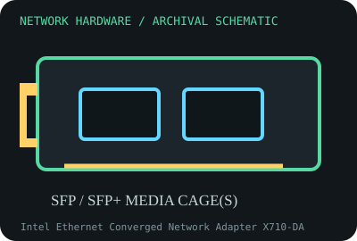

[ MODEL-SPECIFIC NETWORK HARDWARE RECORD ]
Intel Ethernet Converged Network Adapter X710-DA2
Dual SFP+ 10GbE PCIe server adapter in Intel’s X710 family. This record identifies the stated model/revision; visually similar products may use different silicon or firmware.

IDENTIFICATION: Verify the full label, board revision, vendor/device IDs and regulatory markings before selecting firmware or drivers. Nominal PHY/link rates below are not measured application throughput.
Specifications and compatibility
| Subcategory | 10 Gigabit and server adapters |
|---|---|
| Exact model | Intel Ethernet Converged Network Adapter X710-DA2 |
| Interface and connector | PCIe 3.0 x8 host interface; two SFP+ cages for qualified optical transceivers or DACs. |
| Controller / PHY / radio | Intel X710 controller; supported Ethernet rates and media depend on card NVM, transceiver/DAC and firmware qualification. |
| Nominal throughput (not a test) | Two SFP+ links rated up to 10 Gb/s each; 20 Gb/s aggregate is nominal link capacity, not a measured single application stream. |
| Measured throughput | No measured throughput data is supplied. A valid result must name the specific optic/DAC, switch, fiber, packet size, driver, firmware, PCIe slot and test duration. |
| Driver / OS / firmware | Linux i40e driver is used for X710; Intel provides Windows and Windows Server driver packages for supported releases. NVM firmware should follow exact adapter/OEM instructions. |
| Compatibility | PCIe x8 slot and qualified SFP+ module/DAC required. Confirm wavelength, single-/multimode fiber, connector, cable length and switch compatibility; some features require compatible firmware and OS. |
| Variant warning | X710-DA2 differs from DA4, T4 and BASE-T/XL710 variants. Certain optics may be rejected or unsupported, and vendor/OEM NVM can restrict transceiver choices; check complete P/N and support matrix. |
Variant and operating notes
X710-DA2 differs from DA4, T4 and BASE-T/XL710 variants. Certain optics may be rejected or unsupported, and vendor/OEM NVM can restrict transceiver choices; check complete P/N and support matrix.
Linux i40e driver is used for X710; Intel provides Windows and Windows Server driver packages for supported releases. NVM firmware should follow exact adapter/OEM instructions.
Throughput policy: vendor/standard rates are labeled nominal. This archive includes no measured benchmark for this specimen; do not interpret a link rate or aggregate port capacity as sustained payload performance.
Archival, ESD and preservation notes
Catalog transceiver brand, EEPROM coding, wavelength, firmware/NVM and both MACs. Fit dust caps, do not look into active fiber, and handle card and optics under ESD-safe conditions.
Preserve the exact model/revision, serial/date code, firmware and driver versions, accessories, condition, source provenance, and source-document revision. Never retain access credentials or undocumented secrets in the public catalog.
Manufacturer and standards sources
- Intel X710-DA2 product informationManufacturer or standards reference; match the complete model/revision before applying specifications.
- Intel X710 support and driversManufacturer or standards reference; match the complete model/revision before applying specifications.
- IEEE 802.3 Ethernet standardsManufacturer or standards reference; match the complete model/revision before applying specifications.
Source coverage can be family-level; manufacturer documentation for the exact part number and hardware revision takes precedence. Standards describe protocol behavior, not a promise of real-world performance.